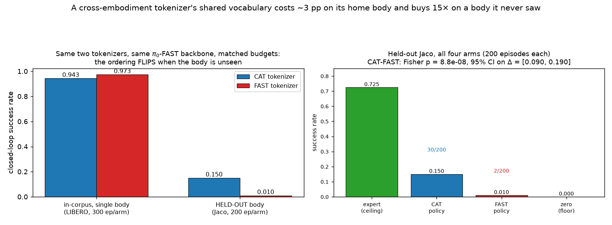
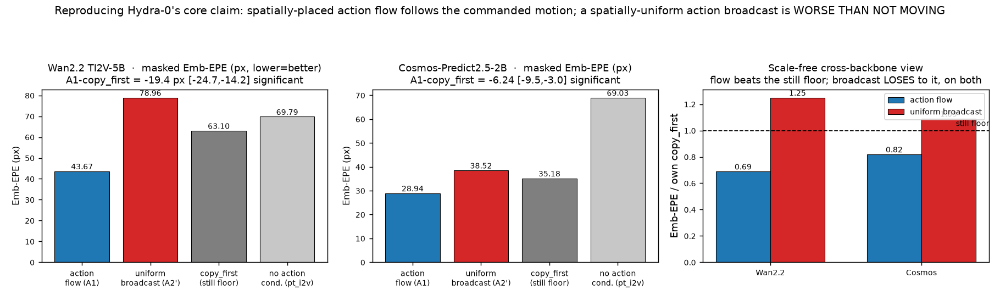
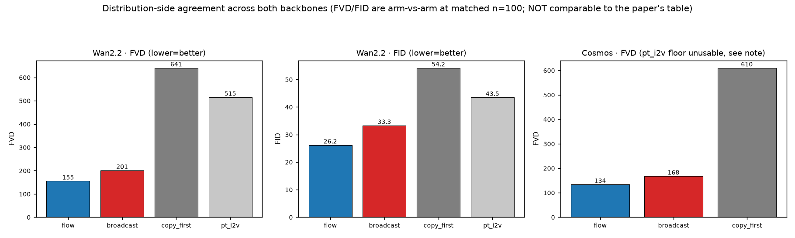
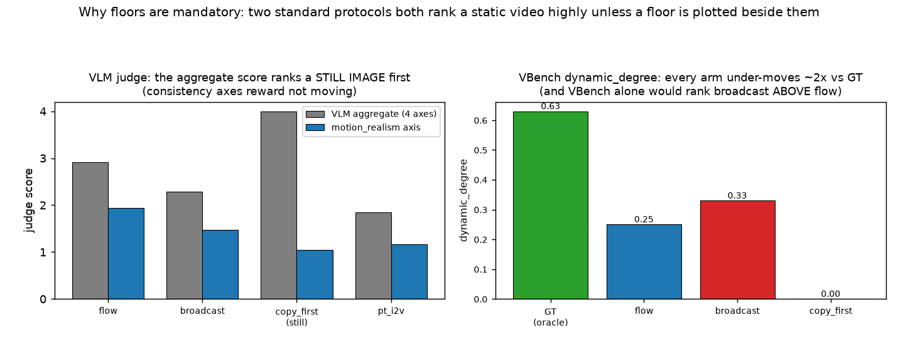
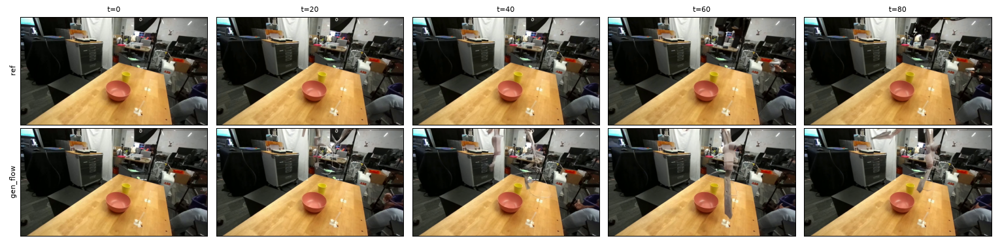
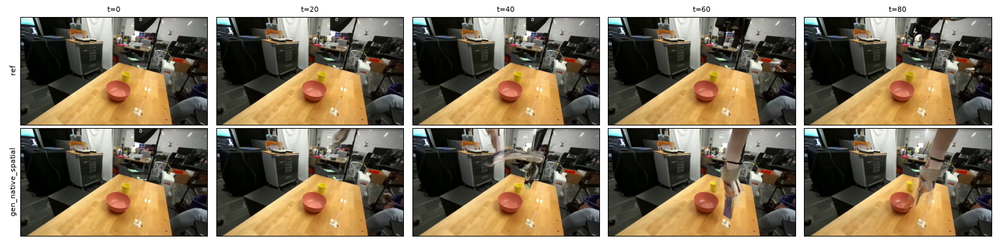
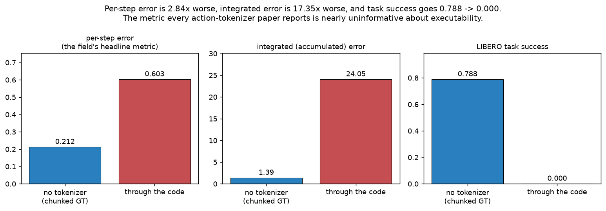
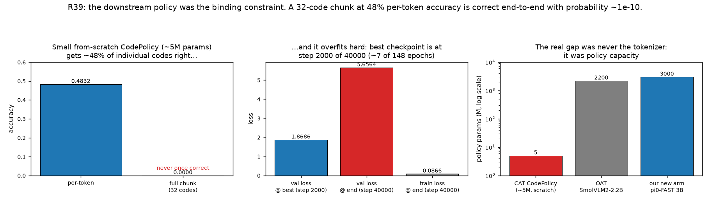
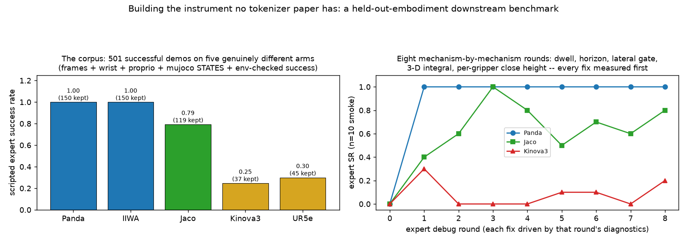

CAT × Hydra-0
Reproducing an action-flow world model, and asking what a cross-embodiment action tokenizer actually has to preserve.
Academic-scale study — all training fits in ≤16 H200 GPUs. Every number on this page is traceable to a logged SLURM job in the project ledger. Last updated 2026-09-01.
The headline, as of the latest run: on the held-out-embodiment benchmark we built — a policy trained on four robots, evaluated closed-loop on a fifth it never saw — the CAT tokenizer succeeds 15× more often than FAST (0.150 vs 0.010 over 200 episodes, Fisher p = 8.8e-08). The same two tokenizers, in the same policy at matched budget, rank the opposite way on a single-body benchmark. A shared cross-embodiment vocabulary costs ~3 points at home and pays 15× abroad — and nobody had an instrument that could see the second half until now. (Second rotation, with a different held-out robot, is running; the pre-registered verdict waits for it.)

Before that: we reproduced the core claim of the action-flow world model on two video backbones — a spatially placed action signal follows commanded motion while a uniform broadcast is worse than not moving — and found along the way that the per-step reconstruction metric this subfield reports barely predicts whether actions still work on a robot.
What this project is, in plain terms
A robot policy has to emit actions. Many recent systems emit them as discrete tokens, exactly like a language model emits words, because that lets a vision-language model drive a robot without bolting on a separate continuous controller. The component that turns continuous motion into a short string of tokens and back is an action tokenizer.
The appealing idea is a cross-embodiment tokenizer: one shared vocabulary covering many different robots — a Franka arm, a UR5e, a Kinova, a two-fingered gripper, a mobile manipulator — so that data collected on one machine helps on another. Papers claiming this are common. What is uncommon is checking whether the shared vocabulary is genuinely shared, or whether the model has quietly learned to partition it by robot, producing what is really a set of per-robot codebooks that happen to share an index space.
Our second thread is a world model called Hydra-0, which conditions video prediction on action flow: instead of feeding the model a single action vector for the whole frame, it paints the action onto the image plane where the motion actually occurs. That paper is our own lab's, but its code and weights were lost, so we rebuilt the two backbone variants from scratch.
The whole pipeline at a glance
Part 1 — Reproducing the world model, on two backbones
We trained two arms that differ in exactly one thing. The first, action flow, paints the action into the image plane at the pixels where motion happens. The second, uniform broadcast, takes the same action vector and copies it across every spatial location — same number of channels, same injection point, same optimizer, same steps, same clips in the same order. So any difference is attributable to spatial placement and nothing else.
Against them we always plot two floors. copy_first simply repeats the first
frame forever, and pt_i2v is the pretrained backbone with no action conditioning
at all. These are not decoration: on this data roughly nine tenths of the pixels are static
background, so a still image scores extremely well on any whole-frame metric. Without the
floors you would draw the wrong conclusion.


The headline, with confidence intervals. Paired bootstrap over the same 100 clips in the same order, on Wan2.2: action flow beats uniform broadcast by +0.90 dB PSNR [+0.71, +1.09], +0.0127 SSIM [+0.0095, +0.0161], −0.0233 LPIPS [−0.0286, −0.0182], and −35.3 px endpoint error [−41.3, −29.4]. None of the intervals cross zero, and the direction is identical on the second backbone. Spatial placement of the action is doing real work.

Seeing it directly
Numbers were not enough here; the qualitative failure is specific and visible.


Part 2 — The finding we did not go looking for
Having a world model that follows action flow, we turned to compressing actions into discrete tokens. Here we hit a result that we think matters beyond this project.

Why this happens. Robot actions are relative — each one displaces the arm from where the last one left it — so a controller integrates them. A per-step objective says nothing about whether consecutive errors are independent or correlated. We measured the lag-1 autocorrelation of the error at 0.6446, which means drift grows roughly in proportion to horizon length rather than to its square root. Two further independent measurements agree: the code turns out to be invariant to the order of a chunk while remaining sensitive to its sign, which is the signature of a representation that has learned a sum.
The consequence for the field: a tokenizer paper reporting only per-step reconstruction is reporting a number that is nearly uninformative about whether the codes can still drive a robot. This conclusion does not depend on our method working.

Part 3 — The verdict, and what was actually blocking us


What we are running now. The comparison target, OAT, reports 33.4% success on LIBERO — but that number comes from a fully fine-tuned 2.2-billion-parameter vision-language model, not from a 5M policy. So we moved the codes into a real VLA: π0-FAST, a PaliGemma-3B model whose action interface is already a discrete token stream, which is precisely the slot a CAT code sequence occupies. Two arms, identical in every respect except the tokenizer, at a matched 30k-step budget.
Stated up front, because it would be easy to overclaim: beating 33.4% in absolute terms is not a like-for-like comparison. π0-FAST's base checkpoint is pretrained on a large robot corpus, while OAT's backbone is a general vision-language model with no robot pretraining. A higher absolute number is mostly the backbone. The defensible claim is CAT versus FAST inside the same policy at the same budget, and we will report the two separately. Hydra-0 itself reports no LIBERO success rate at all, so on this benchmark there is no Hydra-0 number to beat.
Part 4 — The cross-embodiment corpus
Testing whether a shared vocabulary is genuinely shared requires data where the robot changes and nothing else does. Otherwise "which robot" is perfectly predictable from the scene, and any identity-leakage measurement is meaningless — which is exactly what we measured on our earlier corpus, where scene alone identified the dataset perfectly.

Part 5 — The held-out-embodiment benchmark (new)
Every cross-embodiment tokenizer paper we surveyed claims a shared vocabulary across robots; none of them ever held a robot out and asked whether a policy using that vocabulary transfers to it. The blocker is data: public multi-robot corpora store actions but no simulator states or images, so a closed-loop evaluation on a new body was impossible. We generated the missing corpus ourselves — a scripted OSC-space expert (reach, descend, grasp, lift) that is body-generic by construction, run on five genuinely different arms in matched scenes, keeping only episodes the environment itself scores as successful, and saving frames, wrist camera, proprioception and full MuJoCo states.

The experiment: train π0-FAST on four bodies' demonstrations (Jaco held out, 202 episodes, 8k steps, both arms matched in everything but the tokenizer), then evaluate closed-loop on Jaco — new arm in the pixels, new dynamics under the same end-effector interface. Calibration first: the scripted expert scores 0.71–0.76 on Jaco through the eval harness (the ceiling), zero actions score 0.000 (the floor). Then the policies: CAT 30/200 = 0.150, FAST 2/200 = 0.010. Fisher exact p = 8.8e-08; bootstrap 95% CI on the difference [0.090, 0.190]. One caveat, stated plainly: our pre-registered criterion requires the direction to hold on a second held-out robot before "CAT wins" is declared — that rotation (IIWA held out, a different gripper class) is training now.
All measured numbers
World model reproduction — Wan2.2 TI2V-5B (n=100 matched clips)
| Metric | action flow | uniform broadcast | copy_first | pt_i2v |
|---|---|---|---|---|
| PSNR ↑ | 18.345 | 17.447 | 18.494 | 15.193 |
| SSIM ↑ | 0.8018 | 0.7891 | 0.8239 | 0.5864 |
| LPIPS ↓ | 0.1653 | 0.1886 | 0.1620 | 0.3322 |
| FID ↓ | 26.19 | 33.28 | 54.18 | 43.47 |
| FVD ↓ | 155.47 | 201.14 | 641.04 | 514.86 |
| masked Emb-EPE px ↓ | 43.67 | 78.96 | 63.10 | 69.79 |
| VLM judge, motion axis ↑ | 1.94 | 1.47 | 1.04 | 1.17 |
| VBench dynamic degree | 0.25 | 0.33 | 0.00 | 0.35 |
Ground-truth video re-encoded through the same decoder scores 0.63 on dynamic degree, so all arms under-move. Subject/background consistency for the still floor is 1.000 against ground truth's 0.958 — a "perfect" score that is pathological, which is why consistency metrics are never quoted alone here.
World model reproduction — Cosmos-Predict2.5-2B (n=100)
| Metric | action flow | uniform broadcast | copy_first |
|---|---|---|---|
| PSNR ↑ | 17.93 | 17.78 | 18.50 |
| FID ↓ | 25.68 | 28.91 | 52.60 |
| FVD ↓ | 134.17 | 167.87 | 610.19 |
| masked Emb-EPE px ↓ | 28.94 | 38.52 | 35.18 |
The no-conditioning floor on this backbone is degenerate (FVD 5196) and is marked unusable; the still floor is used for the distribution-side judgement instead. Root cause is still open — candidates are the sampling schedule and absence of guidance, not the positional-encoding convention, which we corrected and which changed the arms by less than noise.
Tokenizer, on LIBERO (52 episodes, three suites)
| Arm | Success | What it is |
|---|---|---|
| raw demo actions | 0.8846 | true ceiling; harness sanity check |
| chunked ground truth | 0.7885 | fair ceiling — same chunking, no tokenizer |
| through the code | 0.0000 | the tokenizer under test |
| zero actions | 0.0000 | trivial floor |
| Reconstruction vs execution | chunked GT | through the code | ratio |
|---|---|---|---|
| per-step L2 (the field's headline) | 0.21234 | 0.60256 | 2.84× |
| integrated L2 | 1.3860 | 24.0516 | 17.35× |
| task success | 0.788 | 0.000 | — |
Matched tokenizer comparison in π0-FAST (30k steps, LIBERO, 100 ep/suite)
| suite | CAT | FAST | Δ |
|---|---|---|---|
| libero_object | 0.98 | 1.00 | −0.02 |
| libero_spatial | 0.93 | 0.96 | −0.03 |
| libero_goal | 0.92 | 0.96 | −0.04 |
| aggregate | 0.9433 | 0.9733 | −0.030 (CI [−6.2, +0.2]pp) |
FAST ahead on all three suites in-distribution — the shared vocabulary pays a real cost at home. Both absolute numbers are dominated by the robot-pretrained π0-FAST base and must not be read against OAT's 33.4% (its SmolVLM2 backbone has no robot pretraining; the matched FAST arm is the control proving the point).
Held-out-embodiment benchmark (Jaco, 200 ep/arm, pooled over 2 seed blocks)
| arm | SR | count |
|---|---|---|
| expert (data-generating ceiling) | 0.71–0.76 | per-block |
| CAT policy | 0.150 | 30/200 |
| FAST policy | 0.010 | 2/200 |
| zero actions (floor) | 0.000 | 0/200 |
Fisher exact p = 8.8e-08; bootstrap 95% CI on Δ = [0.090, 0.190]; direction consistent across both disjoint seed blocks. Pre-registered full verdict awaits a second rotation (IIWA held out), currently training.
Downstream policy diagnosis
| Quantity | Value |
|---|---|
| training corpus | 69,145 chunks × 32 codes |
| per-token accuracy | 0.4832 |
| whole-chunk accuracy | 0.0000 |
| train / validation loss at 40k steps | 0.0866 / 5.6564 |
| best checkpoint | step 2,000 of 40,000 |
What we are careful about
Three honest limits travel with every number here. Our corpus is about 439 hours, roughly a fifth of what the original paper used, and one dataset supplies two thirds of it. The paper does not report its optimizer, learning-rate schedule, batch size, sampling ratios or step counts, so those are our choices and not a reproduction of theirs. And it reports compute only for a larger backbone than either of the two we target, so all comparisons between our arms are step-matched to each other rather than to the paper.
We also keep a standing rule that a metric may not be quoted without its floor. It has already caught three separate mistakes on this project: a still image ranked first by a VLM judge, a benchmark that ranked the worse arm higher, and a broken control that would have made a correct conclusion rest on wrong evidence.
≤16 H200 for training
two video backbones
five-arm matched corpus
floors on every metric
Figures are generated directly from the logged result ledger; each corresponds to a numbered
entry with its SLURM job id. Cross-embodiment held-out evaluation and the π0-FAST
tokenizer-swap comparison are in progress.